专题1.3 从立体图形到平面图形（二）
专题1.3 从立体图形到平面图形（二）


教学目标 | 1.能识别简单物体从三个方向看到的形状图. 2.会画正方体及其简单组合体从三个不同方向看到的形状图. 3.能根据物体从三个方向看到的形状图描述基本几何体或实物原形. |
教学重难点 | 1.重点：能画出从不同方向看到的小立方体所搭几何体的形状图. 2.难点：根据从不同方向看到的形状图描述几何体. |

知识点1 从三个方向看物体的形状
一般是从以下三个方向：(1)从正面看；(2)从左面看；(3)从上面看．（如下图）
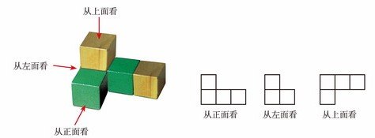
【即学即练】
1．如图，一个圆柱体切去一部分，则从上面看到的图形是（ ）

A． B．
B． C．
C． D．
D．
2．在一仓库里堆放着若干个相同的正方体小货箱，仓库管理员将这堆货箱从不同方向看到的图形画了出来，如图所示，则这堆正方体小货箱共有 箱．

3．将若干个棱长为 的小立方块摆成如图所示的几何体．
的小立方块摆成如图所示的几何体．

(1)①请分别画出从正面，左面和上面观察该儿何体看到的平面图形：
②则该几何体的表面积为______；
(2)依图中摆放方法类推，当几何体摆放了5层时，求该几何体的表面积．

题型01 从不同方向看简单几何体的形状
【典例1】如图所示的几何体从左面看到的形状图是（ ）
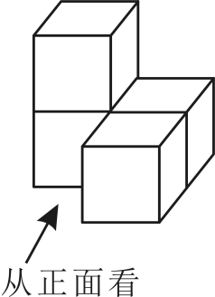
A． B．
B．
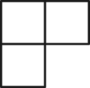
C． D．
D．
【变式1】如图是由5个完全相同的小正方体搭成的几何体，从左面看得到的平面图形是（ ）

A． B．
B． C．
C． D．
D．
【变式2】如图所示的家用热水瓶，从左面看这个家用热水瓶的形状图为（ ）

A．
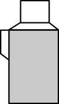
B． C．
C．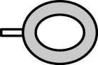
D．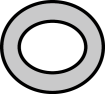
【变式3】如图所示的几何体是由6个大小相同的小正方体搭成的，从前面看到的图形是（ ）
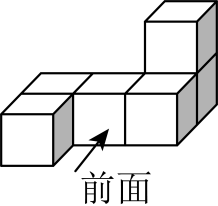
A．
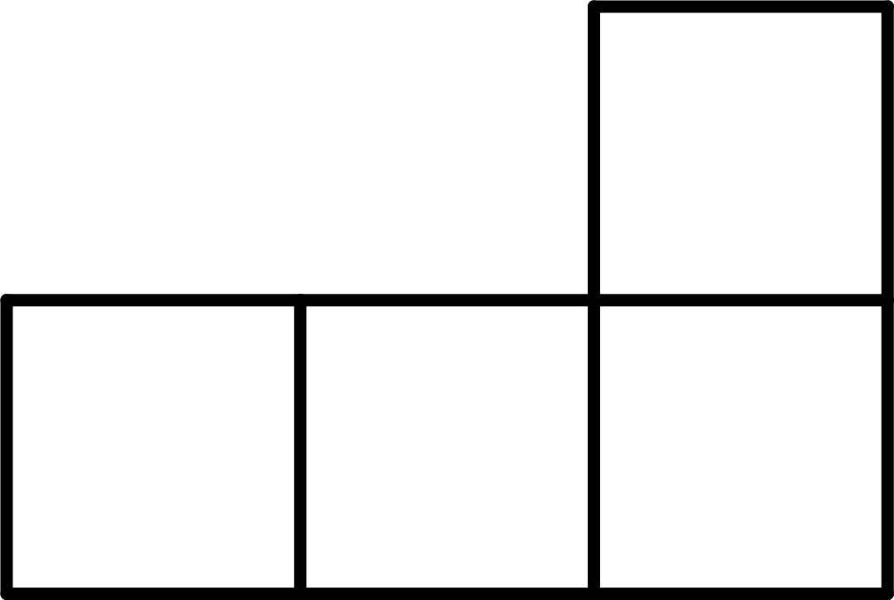
B． C．
C． D．
D．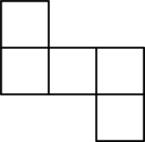
题型02 从不同方向看简单组合体的形状
【典例1】从不同方向看某个立体图形得到的平面图形如图所示，则这个立体图形可能是下面选项中的（ ）
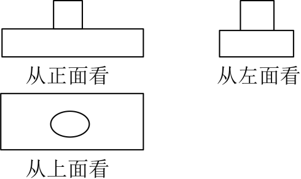
A． B．
B．
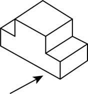
C． D．
D．
【变式1】如图，传统益智玩具原木旋转陀螺是圆锥与圆柱的组合体，从正面看它的视图是（ ）
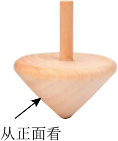
A．
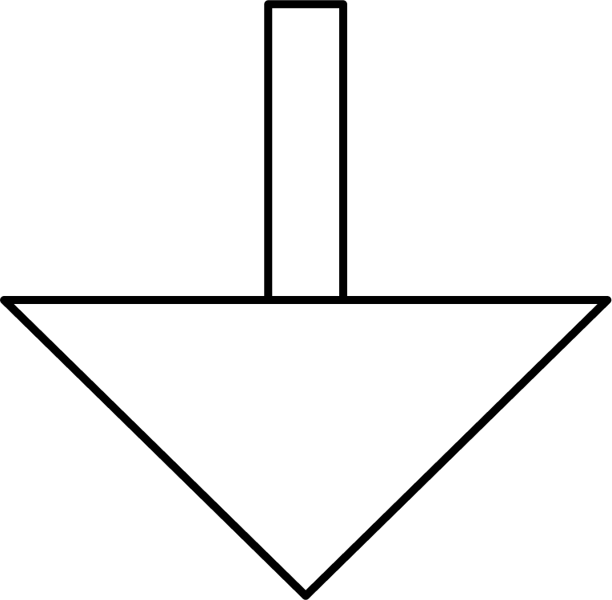
B．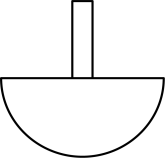
C． D．
D．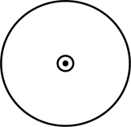
【变式2】篆刻是中华传统艺术之一．如图是一块雕刻印章的材料，从正面看这个印章，得到的平面图形是（ ）

A． B．
B． C．
C． D．
D．
【变式3】如图是由一个长方体和一个圆锥组成的立体图形，从前面看该立体图形得到的平面图形是（ ）
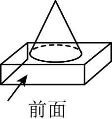
A．
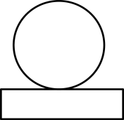
B． C．
C．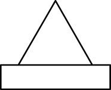
D．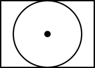
题型03 画出从不同方向看几何体的平面图形
【典例1】如图，这是由8个大小相同的小立方块搭建的几何体，请按要求在方格内分别画出从 这个几何体的三个不同方向看到的形状
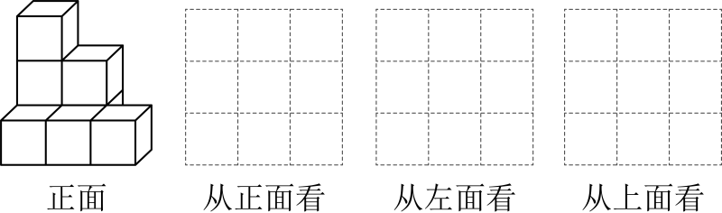
【变式1】如图是用8个相同的小正方体搭成的几何体，请在对应的网格中画出从该几何体的正面、左面和上面看到的形状图．
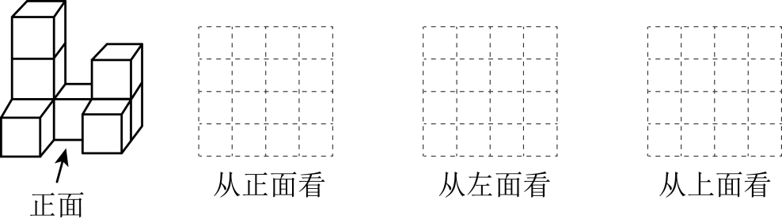
【变式2】如图，是由若干个完全相同的小正方体堆成一个几何体．请在网格中分别画出从正面、左面和上面看到的这个几何体的形状图．
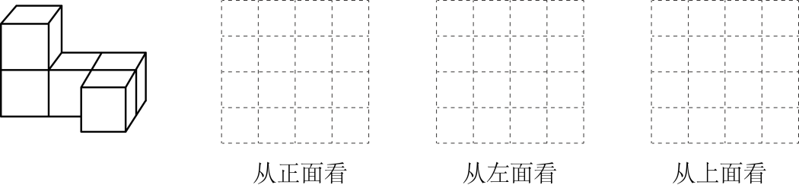
【变式3】如图是由7个相同的正方体搭成的几何体，请在对应位置画该几何体从正面、左面和上面得到的形状图．
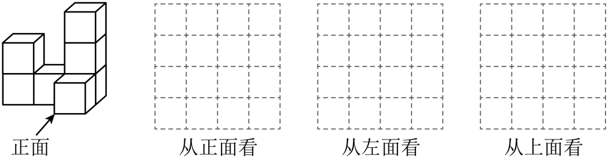
题型04 由从不同方向看到形状图求解
【典例1】如图是某几何体从正面、左面、上面看到的形状图．
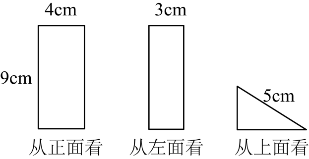
(1)这个几何体的名称是 ；
(2)若从正面看到的长方形的宽为4 ，长为9，从左面看到的宽为3，从上面看到的直角三角形的斜边为5，则这个几何体中所有棱长的和是多少？它的表面积是多少？
，长为9，从左面看到的宽为3，从上面看到的直角三角形的斜边为5，则这个几何体中所有棱长的和是多少？它的表面积是多少？
【变式1】如下图所示的是从正面和上面看一个几何体所看到的图形（单位： ）．求该几何体的体积．
）．求该几何体的体积．

【变式2】如图是一个几何体的从三个方向看到的形状图．

(1)写出这个几何体的名称：________；
(2)根据图中数据（单位： ），求它的表面积和体积．（结果保留
），求它的表面积和体积．（结果保留 ）
）
【变式3】如图，是某几何体从三个方向分别看到的图形．

(1)说出这个几何体的名称；
(2)若图①的长为
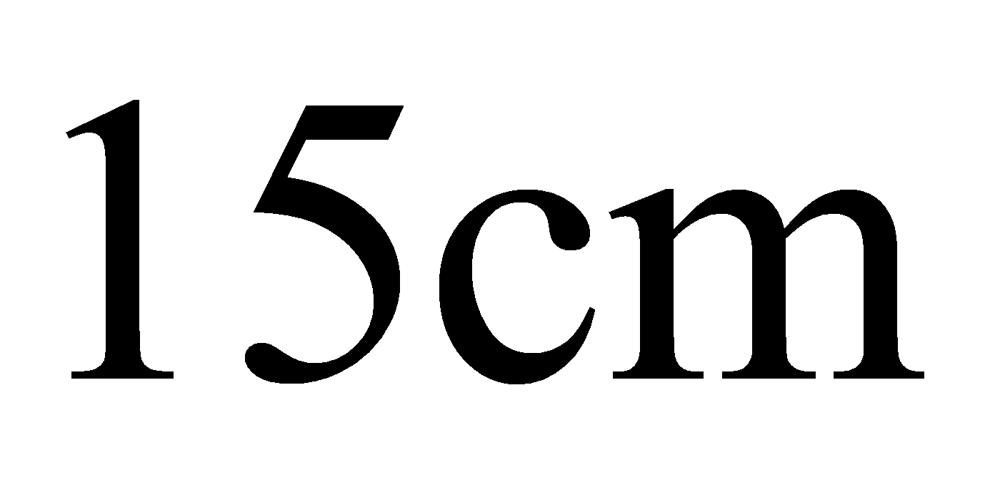
，宽为 ；图②的宽为
；图②的宽为 ；图③直角三角形的斜边长为
；图③直角三角形的斜边长为 ，试求这个几何体的所有棱长的和是多少？它的侧面积多大？
，试求这个几何体的所有棱长的和是多少？它的侧面积多大？题型05 根据从不同方向看到的图形确定立方块的个数
【典例1】注重想象能力一个几何体是由一些大小相同的小正方块摆成的，从前面看和从上面看到的平面图形如图所示，则组成这个几何体的小正方块最多有 个．

【变式1】由若干个相同的小正方体搭成的一个几何体，从正面和左面看到的这个几何体的形状图如图所示，则组成这个几何体的小正方体的个数最少有 个．

【变式2】用若干大小相同的小立方块搭成一个几何体，使得从上面和从左面看到的这个几何体的形状如图所示，则搭成该几何体最多需要 个小立方块．

【变式3】一个由小立方块摆成的几何体，无论从正面，还是从左面都可以看到如图所示的图形，请你判断一下：最少可以用 个小立方块，最多可以用 个小立方块．
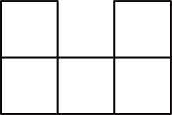
题型06 根据从上面看到的图形确定几何体的形状
【典例1】一个几何体由若干个大小相同的小立方块搭成，从上面看到的几何体的形状如图所示，其中小正方形中的数字表示在该位置的小立方块的个数．请画出从正面和左面看到的这个几何体的形状图．
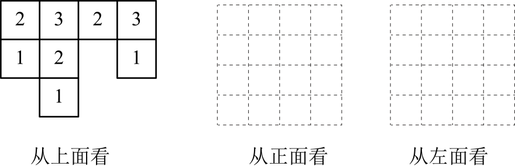
【变式1】如图，是一个小正方体所搭几何体从上面看得到的平面图形，正方形中的数字表示在该位置小正方体的个数．

(1)请你画出它从正面和从左面看得到的平面图形．
(2)若每个小正方体的棱长为1，求搭建几何体的体积，
【变式2】一个几何体由n个大小相同的小立方块搭成，从上面看到的几何体的形状图如图所示，其中小正方形中的数字表示在该位置的小立方块的个数．
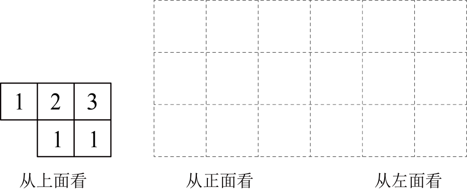
(1) ________；
________；
(2)请在右面的网格中画出从正面和左面看到的这个几何体的形状图．
【变式3】一个几何体由几个大小相同的小立方块搭成．从上面看到的这个几何体的形状图如图所示，其中小正方形中的数字表示在该位置的小立方块的个数．
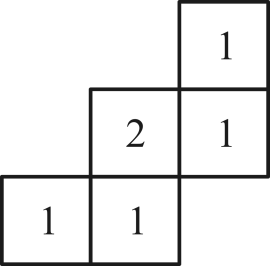
(1)请画出从正面、左面看到的这个几何体的形状图；
(2)能不能在某些位置增加小立方块，使从正面、左面看到的几何体的形状图不变？如果能，请画出两种不同位置摆放的从上面看的形状图，并在图上小正方形中标出该位置的小立方块的个数；如果不能，请说明理由；
(3)能不能减少某些位置的小立方块，使从正面、左面看到的几何体的形状图不变？最少可以用几个小立方块？
题型07 根据从不同方向看到的形状图确定几何体的可能情况
【典例1】用若干个完全相同的小立方块搭一个几何体，使几何体从正面、上面看到的形状图如图所示．从上面看到的形状图中，小正方形中的字母表示在该位置小立方块的个数．

(1) ，
， ，
， 表示的数字分别是________，________，________；
表示的数字分别是________，________，________；
(2)这个几何体最少是由几个小立方块搭成的？最多呢？
(3)当 ，
， 时，画出从左面看这个几何体得到的形状图．
时，画出从左面看这个几何体得到的形状图．
【变式1】用小立方块搭一个几何体，使从正面和上面看到的形状图如图所示，上面看到的形状图中小正方形中的字母表示在该位置小立方块的个数．

(1)求a的值和b的最大值；
(2)这个几何体最少由几个小立方块搭成？最多呢？
【变式2】【问题背景】 用小立方块搭一个几何体，使它从正面和上面看到的形状如图所示，从上面看到形状中小正方形中的字母表示在该位置上小立方块的个数．
【初步探究】（1） 表示的数是______，
表示的数是______， 表示的数是______，
表示的数是______， 表示的数是______；
表示的数是______；
【深入探究】（2）这个几何体最少由____个小立方块搭成，最多由_____个小立方块搭成。
（3）当 ，
， 时，画出从左面看这个几何体的形状．
时，画出从左面看这个几何体的形状．
【变式3】问题1： 一个几何体由大小相同的小正方体搭成，从上面看到的几何体的形状如图所示，其中小正方形中的数字表示在该位置的小正方体个数．

（1）请画出从正面和从左面看到的这个几何体的形状图．

（2）若小正方体的棱长为 ，求该几何体的表面积．
，求该几何体的表面积．
问题2：用小立方块搭一个几何体，使得它从左面看和从上面看的图形如图所示，

这样的几何体最少要几个立方块．最多要几个立方块？并画出最少时从正面看到的图形．

1．下列四个几何体，从上面往下看是三角形的是（ ）
A．
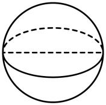
B．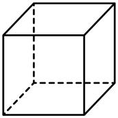
C． D．
D．
2．分别从前面、左面、上面观察一个立体图形，得到的平面图形如下图所示，该立体图形是（ ）
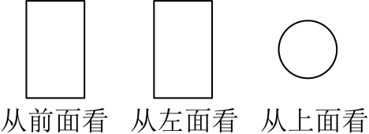
A．圆柱 B．圆锥 C．正方体 D．长方体
3．如图是一个“粮仓”从三个不同的方向看到的视图，则这个几何体的体积是（ ）
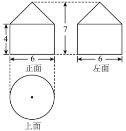
A．
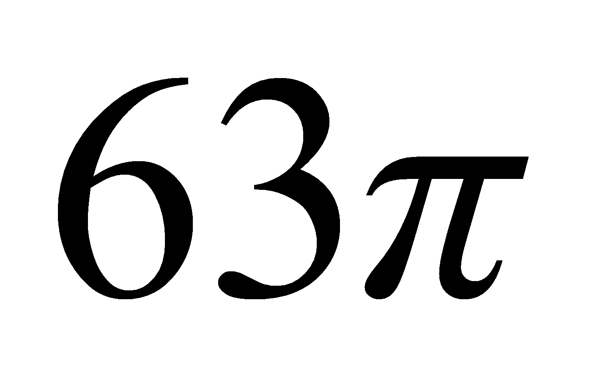
B． C．85 D．40π
C．85 D．40π4．一个几何体由大小相同的小立方块组成，从正面、左面和上面看到的几何体的形状如图所示，则搭成这个几何体需要的小立方块的个数为（ ）

A．5 B．6 C．7 D．8
5．如图，这是由7个立方体叠成的几何体，用 表示1个立方体，用
表示1个立方体，用 表示2个立方体叠加，用表示3个立方体叠加，则从上面看到的这个几何体的形状图是（ ）
表示2个立方体叠加，用表示3个立方体叠加，则从上面看到的这个几何体的形状图是（ ）

A． B．
B． C．
C． D．
D．
6．根据下列从不同方向看物体的图形，几何体是 ．

7．从正面和从左面看一个长方体得到的形状图如图所示(单位： cm)，则其从上面看到的形状图的面积是 ．
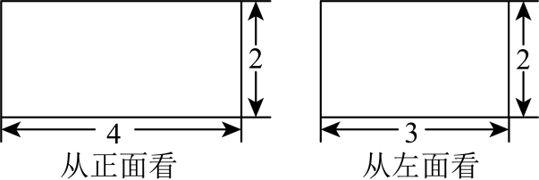
8．分别从前面、左面、上面观察圆柱，得到的平面图形的有关尺寸如图所示，则该圆柱的表面积为  （结果保留
（结果保留 ）．
）．

9．一个几何体由大小相同的小立方块搭成，从上面看到的形状如图所示，小正方形中的数字表示在该位置的小立方块的个数，若每个小立方块的棱长为1 ，涂该几何体的油漆价格为2元/
，涂该几何体的油漆价格为2元/ ，则该几何体表面涂满油漆所需费用为 元．
，则该几何体表面涂满油漆所需费用为 元．

10．用相同的小立方块搭一个几何体，使得从前面、上面看这个几何体的形状图如图所示，这样的几何体最少要 个小立方块，最多要 个小立方块．

11．如图所示的几何体，由五个大小相同的小正方体搭成．

(1)分别画出从正面，左面和上面看到的该几何体的形状图；
(2)当去掉一个小正方体_______时，剩余部分从左面看形状没有改变（填写图中小正方体的序号）．
12．用6个大小相同的小立方块搭成如图所示的几何体．
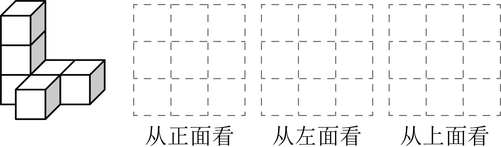
(1)请画出该几何体从正面、左面和上面看到的形状图；
(2)在这个几何体上再添加一些相同的小立方块，使得从左面和上面看到的形状图不变，那么最多可以再添加多少个小立方块？请在从上面看到的形状图里标注出来．
13．如图，已知长方形的长为 ，宽为
，宽为
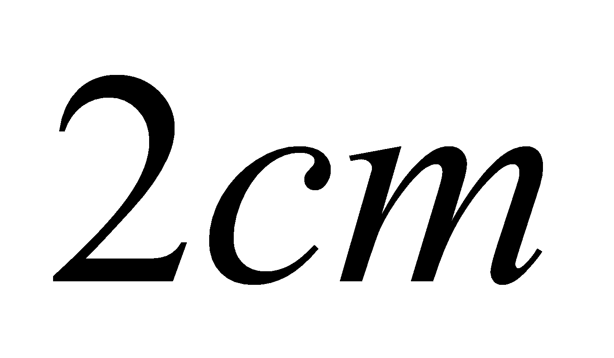
，将该长方形绕其中一条长边所在直线旋转一周．
(1)所得几何体名称叫 ，把这个几何体底面朝下放置，则它从 面和 面看形状相同；（填“正”或“上”或“左”）
(2)根据图中数据，求出该几何体的表面积．（结果保留）
14．如图1是由几个完全相同的小正方体搭成的一个几何体的俯视图，每个小正方体的棱长为 ．
．

(1)请画出从不同方向看该几何体得到的平面图形；（在图2所提供的方格内涂上相应的阴影即可）
(2)请计算出该几何体的表面积；
(3)如果小明还想添加一些相同的小正方体，并保持从上面和左面看得到的形状图不变，最多可以再添几个小正方体？
15．如图是用 个棱长是
个棱长是 ，大小相同的小正方体搭成的几何体．
，大小相同的小正方体搭成的几何体．
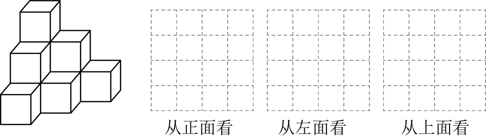
(1)请你画出该几何体的三种视图（不要涂成阴影）．
(2)这个几何体的表面积是______（包含底部）；
(3)如果要保证从上面看的图和从左面看的图不变，最多可以增加______个小正方体；
(4)如果要保证三个视图都不变，最多可以增加______个小正方体．
16．一个几何体由10个大小相同的小立方块搭成，从上面观察这个几何体，看到的形状如图所示．其中小正方形中的数字表示在该位置的小立方块的个数．
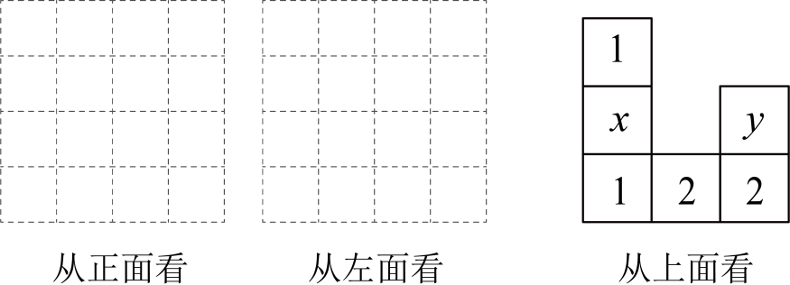
(1)当 时，
时， 的值为 ；
的值为 ；
(2)当 时，请在网格中画出从正面、左面看到的这个几何体的形状图；
时，请在网格中画出从正面、左面看到的这个几何体的形状图；
(3)在（2）的条件下，若每个小立方块的边长都为2，请求出这个几何体的表面积．